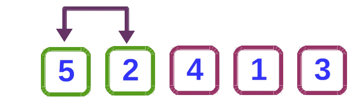
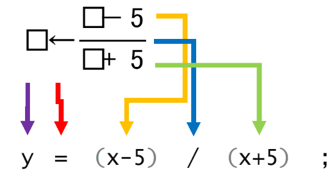
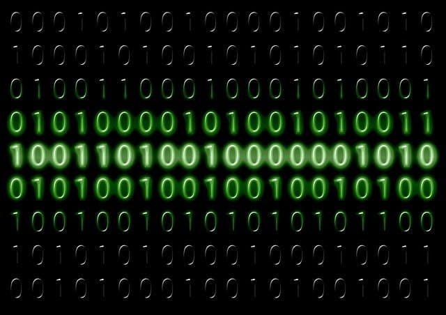
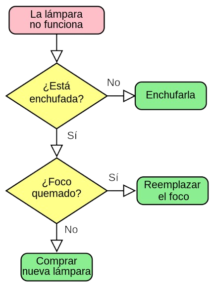
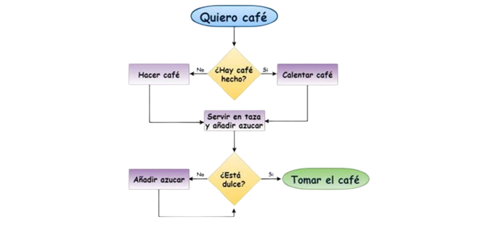
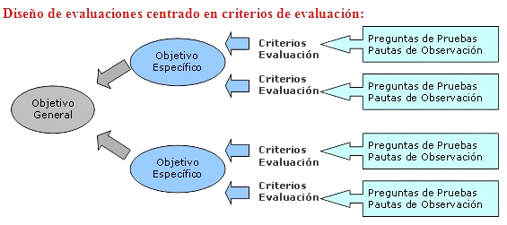

A continuación encontrarás las definiciones de las principales palabras y expresiones relacionadas con la asignatura de fundamentos de la Ingenieria
Interfaz
Una interfaz se refiere al punto de interacción entre dos entidades, como sistemas, dispositivos o programas de software, que permiten la comunicación y el intercambio de datos. En informática, la interfaz se refiere a los métodos, protocolos y puntos de acceso que definen cómo interactúa un usuario con un programa o cómo se comunican entre sí diferentes programas o sistemas. Existen varios tipos de interfaces, como interfaces de usuario (UI), interfaces de programación de aplicaciones (API) y interfaces de hardware, cada una diseñada para facilitar una interacción eficaz y optimizada.
Ejemplo:
Un ejemplo común de interfaz de usuario (UI) es la pantalla táctil de un teléfono móvil, donde el usuario puede tocar y deslizar para interactuar con el sistema operativo y las aplicaciones. En el caso de una API, supongamos que una aplicación de clima obtiene datos de pronóstico a través de una interfaz API que permite la comunicación con un servidor remoto.
Algoritmo
Un algoritmo es un conjunto finito de pasos bien definidos y secuenciales que permiten resolver un problema específico o realizar una tarea concreta. Estos pasos son precisos y deben seguirse en un orden específico, sin ambigüedades, para garantizar que el problema se resuelva de forma correcta y eficiente. Los algoritmos son fundamentales en la programación de computadoras y la inteligencia artificial, ya que sirven como la base para procesar datos, tomar decisiones y realizar operaciones complejas. Pueden ser simples, como una receta para cocinar, o complejos, como los algoritmos que gestionan la búsqueda de información en internet.
Ejemplo:
Un ejemplo clásico es el algoritmo de búsqueda binaria, que encuentra la posición de un valor en una lista ordenada de manera eficiente. El algoritmo divide repetidamente la lista por la mitad, comparando el valor objetivo con el valor medio, hasta encontrar el elemento o determinar que no está presente.
Variable
En programación, una variable es un espacio en la memoria de un sistema informático donde se puede almacenar un valor. Este valor puede cambiar durante la ejecución del programa, y la variable tiene un nombre asociado que permite acceder y manipular su contenido. Las variables son esenciales en todos los lenguajes de programación y permiten que los programas sean dinámicos, manejando datos que pueden cambiar dependiendo de las condiciones de entrada o el proceso de ejecución. Las variables pueden almacenar diferentes tipos de datos, como números, cadenas de texto, booleanos o estructuras más complejas.
Ejemplo:
Si estamos escribiendo un programa para calcular el área de un círculo, podríamos definir una variable llamada radio para almacenar el valor del radio del círculo, y luego usar esa variable para calcular el área mediante la fórmula Area=𝜋×radio² .

Expresión
Una expresión es una combinación de variables, valores, operadores y funciones que, al ser evaluada, produce un resultado. En programación, las expresiones se utilizan para realizar cálculos, tomar decisiones o manipular datos. Las expresiones pueden ser aritméticas, lógicas o de otro tipo, y son fundamentales en la programación porque permiten que los programas realicen operaciones sobre los datos. Dependiendo de los operadores involucrados (como +, -, *, / en aritmética o ==, >, < en operaciones lógicas), las expresiones pueden tener diferentes comportamientos y resultados.
Ejemplo:
En una expresión como 3 * (x + 2), se evalúa primero la operación dentro del paréntesis (sumar 2 a x), y luego el resultado de esa operación se multiplica por 3. Esto es un ejemplo de una expresión aritmética, pero una expresión también puede ser más compleja, como una combinación de operadores lógicos para hacer comparaciones.
Bit
Un bit es la unidad mínima de información en computación, que puede representar dos posibles valores: 0 o 1. Estos valores binarios son la base de todo tipo de datos que se procesan en sistemas digitales. Un conjunto de 8 bits forma un byte, que es la unidad básica de almacenamiento y manipulación de datos en las computadoras. A través de combinaciones de bits, se pueden representar números, caracteres, imágenes y otros tipos de datos. Aunque los bits en sí no tienen un significado en términos humanos, su organización y combinación permite la codificación de información compleja.
Ejemplo:
En el sistema binario, un número como 1011 está compuesto por cuatro bits. Cada bit puede ser 0 o 1, y juntos, estos bits representan un número en el sistema binario que puede convertirse a decimal.
IEEE
El IEEE es una organización profesional internacional dedicada al avance de la tecnología en áreas como la ingeniería eléctrica, electrónica, telecomunicaciones y computación. Esta organización es conocida por desarrollar y promover estándares técnicos globalmente, lo que facilita la interoperabilidad entre sistemas y la innovación en diversas industrias. El IEEE es responsable de la creación de normas que abarcan desde protocolos de comunicación hasta métodos de seguridad, como el conocido estándar IEEE 802.11 para redes Wi-Fi, que regula cómo deben funcionar las redes inalámbricas en todo el mundo.
Ejemplo:
El estándar IEEE 802.11 define las especificaciones para las redes de área local inalámbrica (Wi-Fi), lo que asegura que los dispositivos de diferentes fabricantes puedan comunicarse entre sí utilizando esta tecnología de manera eficiente.
Fundamentos
Los fundamentos son los principios básicos que sirven como base para entender y desarrollar una disciplina o área de estudio. En ingeniería, los fundamentos abarcan los principios teóricos y prácticos que se aplican a las tecnologías y soluciones técnicas. Estos fundamentos pueden incluir conceptos matemáticos, físicos, lógicos y éticos, y son esenciales para abordar de manera efectiva los problemas y desafíos técnicos. Un sólido entendimiento de los fundamentos es crucial para la innovación y la resolución de problemas complejos.
Ejemplo:
En la ingeniería informática, los fundamentos incluyen el entendimiento de los algoritmos, estructuras de datos, teoría de la computación y programación de sistemas. Estos principios permiten a los ingenieros crear software eficiente y resolver problemas de manera efectiva.
Ingeniería
La ingeniería es una disciplina que aplica los principios de las ciencias matemáticas, físicas y naturales para resolver problemas mediante el diseño, la creación y el análisis de dispositivos, sistemas y procesos. Los ingenieros utilizan estos principios para innovar, crear soluciones prácticas y mejorar la eficiencia y funcionalidad de productos y servicios. Existen numerosas ramas de la ingeniería, como la civil, mecánica, electrónica, informática, y bioingeniería, cada una con su enfoque particular en la resolución de problemas en diferentes áreas.
Ejemplo:
Un ingeniero civil diseña la estructura de un puente, tomando en cuenta factores como el peso, la resistencia de los materiales y la seguridad. En cambio, un ingeniero de software diseña un sistema para gestionar la información en una base de datos, aplicando principios de algoritmos y estructuras de datos.
Problema
Un problema es una cuestión o desafío que requiere de una solución o respuesta. En ingeniería y ciencia, un problema puede surgir cuando un sistema no funciona como se espera, o cuando existe una necesidad que no se ha satisfecho completamente. Los problemas pueden tener diversas formas, desde problemas matemáticos complejos hasta cuestiones prácticas relacionadas con la mejora de productos o procesos. El abordaje de un problema implica identificar las causas, proponer soluciones y evaluar la efectividad de dichas soluciones.
Ejemplo:
Un problema común en la ingeniería de software es la optimización del rendimiento de un programa. Si un software tarda mucho en procesar grandes volúmenes de datos, el problema podría abordarse mediante la mejora del algoritmo de procesamiento o la optimización del uso de recursos.
Diagrama
Un diagrama es una representación visual que ilustra de manera simplificada un sistema, proceso o conjunto de relaciones entre variables. Los diagramas son herramientas gráficas muy utilizadas en ingeniería, matemáticas y ciencias para facilitar la comprensión de conceptos complejos. Se utilizan para mostrar de forma clara y concisa cómo se conectan y se interrelacionan las diferentes partes de un proceso, sistema o idea. Dependiendo de su propósito, los diagramas pueden ser de flujo, de barras, de bloques, de Venn, entre otros.
Ejemplo:
Un diagrama de flujo es un tipo común de diagrama usado en programación y procesos, que muestra las distintas etapas o pasos que se deben seguir para completar una tarea o proceso. Es una herramienta que ayuda a visualizar cómo fluye la información o los comandos a través de un sistema.
Encuesta
Una encuesta es un instrumento de recolección de datos utilizado para obtener información de una muestra de personas sobre un tema específico. Las encuestas son herramientas cruciales en la investigación de mercados, estudios de opinión y evaluación de productos o servicios. Pueden ser realizadas de diversas formas, como entrevistas, formularios en línea, encuestas telefónicas o en persona. Las respuestas recogidas en una encuesta se analizan para obtener patrones o conclusiones que ayuden a tomar decisiones informadas.
Ejemplo:
Una encuesta de satisfacción de clientes podría incluir preguntas sobre la experiencia de un cliente con un producto, su nivel de satisfacción y sus sugerencias para mejoras. Esta información se utiliza para mejorar el servicio o producto.
Espina de pescado
El diagrama de espina de pescado o diagrama de Ishikawa es una herramienta visual que se utiliza para identificar y analizar las posibles causas de un problema dentro de un proceso. Este tipo de diagrama tiene la forma de un esqueleto de pescado, donde el "cuerpo" del pescado representa el problema central y las "espinas" principales representan categorías de causas posibles (como métodos, materiales, maquinaria, personas, entre otras). Esta herramienta es muy utilizada en la gestión de calidad y en la resolución de problemas dentro de un proceso industrial o empresarial.
Ejemplo:
En una fábrica, si se está observando un aumento de productos defectuosos, el diagrama de espina de pescado puede ayudar a desglosar las posibles causas de la falla en categorías como defectos en las materias primas, fallos en la maquinaria, errores humanos, etc.
Propuesta
Una propuesta es un documento o presentación que se utiliza para ofrecer una solución a un problema, presentar una idea, o sugerir un plan de acción. En la ingeniería, las propuestas se utilizan para ofrecer soluciones técnicas a un cliente o equipo, describiendo cómo se va a abordar un proyecto o resolver una situación. Una propuesta bien elaborada incluye una descripción detallada del proyecto, los métodos a emplear, el cronograma de ejecución, los recursos necesarios y los costos estimados.
Ejemplo:
Una propuesta de ingeniería para la construcción de una nueva carretera puede incluir un diseño preliminar, una evaluación de costos, el impacto ambiental, el tiempo estimado para la construcción y las metodologías de construcción a seguir.
Diseño
El diseño es el proceso de concepción y planificación de la estructura y el funcionamiento de un objeto, sistema o solución. En ingeniería, el diseño abarca desde la creación de planos detallados hasta la implementación de prototipos o la optimización de sistemas existentes. El diseño involucra tomar decisiones sobre materiales, métodos de fabricación, costos, usabilidad y otros aspectos importantes, siempre con el objetivo de garantizar que el producto final cumpla con los requisitos establecidos. El proceso de diseño también involucra la evaluación y la mejora continua para asegurar la calidad y eficiencia del producto.
Ejemplo:
En el diseño de un automóvil, el ingeniero se encarga de determinar los materiales que se usarán en la carrocería, el tipo de motor, la aerodinámica, el confort y la seguridad, todo ello considerando la funcionalidad y la estética.
Control
El control en ingeniería es el proceso de supervisar y ajustar el comportamiento de un sistema para asegurar que opere según lo esperado. Esto se realiza mediante el uso de sistemas de control, que pueden ser automáticos o manuales, y cuyo objetivo es mantener las variables clave dentro de un rango de operación deseado. El control es crucial en muchos campos, desde la ingeniería de procesos industriales hasta la ingeniería de software, y se puede lograr mediante técnicas matemáticas, dispositivos electrónicos o algoritmos de optimización.
Ejemplo:
Un ejemplo clásico de control es el termostato en un sistema de calefacción, que regula la temperatura de una habitación asegurando que se mantenga dentro de un rango predefinido, encendiendo o apagando el sistema de calefacción según sea necesario.
Criterios
Los criterios son los estándares o principios establecidos para evaluar o tomar decisiones sobre una situación o problema. En ingeniería y gestión de proyectos, los criterios se utilizan para evaluar el éxito o fracaso de una solución, como en el caso de elegir un proveedor, seleccionar el diseño adecuado, o medir la calidad de un producto. Los criterios pueden ser objetivos (como costos, eficiencia, tiempo de ejecución) o subjetivos (como la satisfacción del cliente o la estética).
Ejemplo:
En un proyecto de construcción de un edificio, los criterios de evaluación pueden incluir la seguridad estructural, el costo total del proyecto, la durabilidad de los materiales y el tiempo estimado de finalización.
Boceto
Un boceto es un dibujo o esquema preliminar que se realiza para explorar ideas, conceptos o diseños antes de crear una versión final. Los bocetos son esenciales en el proceso creativo y de diseño, ya que permiten representar visualmente ideas de manera rápida y flexible, sin necesidad de detalles precisos. En ingeniería, un boceto puede ser un dibujo informal de una estructura, dispositivo o sistema, usado como base para el desarrollo de planos detallados.
Ejemplo:
Antes de diseñar una máquina compleja, un ingeniero podría realizar varios bocetos para explorar diferentes configuraciones y enfoques de diseño. Estos bocetos ayudan a visualizar las opciones y elegir la mejor dirección para el diseño final.